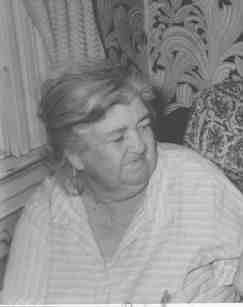

|
|
|
|
|
|
 Rose M. HOEY (1885-1960) |
Rose M. HOEY
• She appeared in the 1900 census on 12 Jun 1900 in Pittsburgh, Allegheny, PA. 6 • She appeared in the 1910 census on 29 Apr 1910 in Pittsburgh, Allegheny, PA. 7 • She appeared in the 1920 census on 22 Jan 1920 in Pittsburgh, Allegheny, PA. 8 • She appeared in the 1930 census on 15 Apr 1930 in Pittsburgh, Allegheny, PA. 1 • She appeared in the 1940 census on 5 Apr 1940 in Pittsburgh, Allegheny, PA. 9 Rose married Frederick HUMM about 1917.1 (Frederick HUMM was born on 31 Aug 1881 in Millvale, Allegheny, PA 3 4 8 10 11, died on 20 Feb 1973 in Pittsburgh, Allegheny, PA 3 4 11 and was buried on 24 Feb 1973 in Calvary Cemetery, Pittsburgh, PA 5.) |
1 Pennsylvania, Allegheny County, 1930 U.S. Census, Population Schedule, (Washington, D.C., National Archives and Records Administration), ED 2-38, Sheet 14, Line 51.
2 Commonwealth of Pennsylvania, Department of Health, Bureau of Vital Statistics, Death Certificate - Rose Hoey Humm, (9 Sep 1960).
3 Funeral Home, Mass Card, (Obtained from Rosemary (Weet) Hoey).
4 Thomas Hoey, Cemetery Headstone, Calvary Cemetery, (Pittsburgh, PA, May 1999).
5 Calvary Cemetery, Cemetery Records, (Pittsburgh, PA, 22 Oct 1999).
6 Pennsylvania, Allegheny County, 1900 U.S. Census, Population Schedule, (Washington, D.C., National Archives and Records Administration), ED 168, Sheet 13, Line 30.
7 Pennsylvania, Allegheny County, 1910 U.S. Census, Population Schedule, (Washington, D.C., National Archives and Records Administration), ED 317, Sheet 16, Line 10.
8 Pennsylvania, Allegheny County, 1920 U.S. Census, Population Schedule, (Washington, D.C., National Archives and Records Administration), ED 360, Sheet 12, Line 100.
9 Pennsylvania, Allegheny County, 1940 U.S. Census, Population Schedule, (Washington, D.C., National Archives and Records Administration), ED 69-63, Sheet 1, Line 42.
10 National Archives and Records Administration., Selective Service Registration Cards, World War II: Fourth Registration., (Washington, D.C.)
11 Social Security Administration, Death Master File, (http://www.ancestry.com/search/rectype/vital/ssdi/main.htm).
{kind=link}